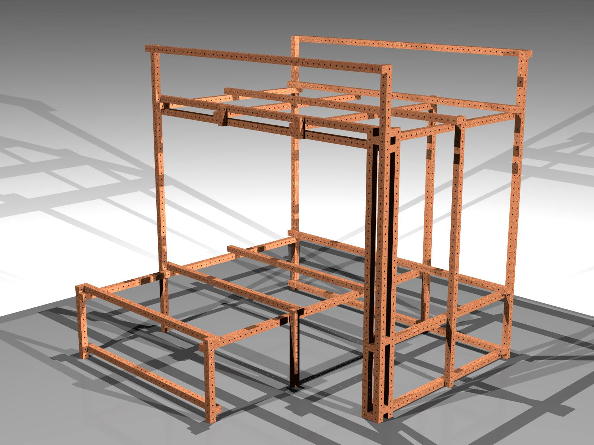

beds revision 5236
^ Projects infobox ^^
| image | Loft.scad.png |
| designer | Phil Jergenson |
| date | 2021 |
| tools | [[wrenches|Wrenches]] |
| parts | [[frames|Frames]], [[end_caps|End caps]], [[bolts|Bolts]], [[nuts|Nuts]] |
| techniques | [[tri_joints|Tri joints]], [[shelf_joints|Shelf joints]] |
| git | |
| stl | |
Challenges
Approaches
